1. Descarga del archivo .iso
El primer paso para la instalación de linux es la descarga del archivo .iso que será utilizado para la instalación del mismo en VirtualBox. En este paso a paso utilizaremos la distribución de Linux Pop!_os. Para ello descargaremos el archivo del siguiente enlace. Y seleccionaremos la primera opción.
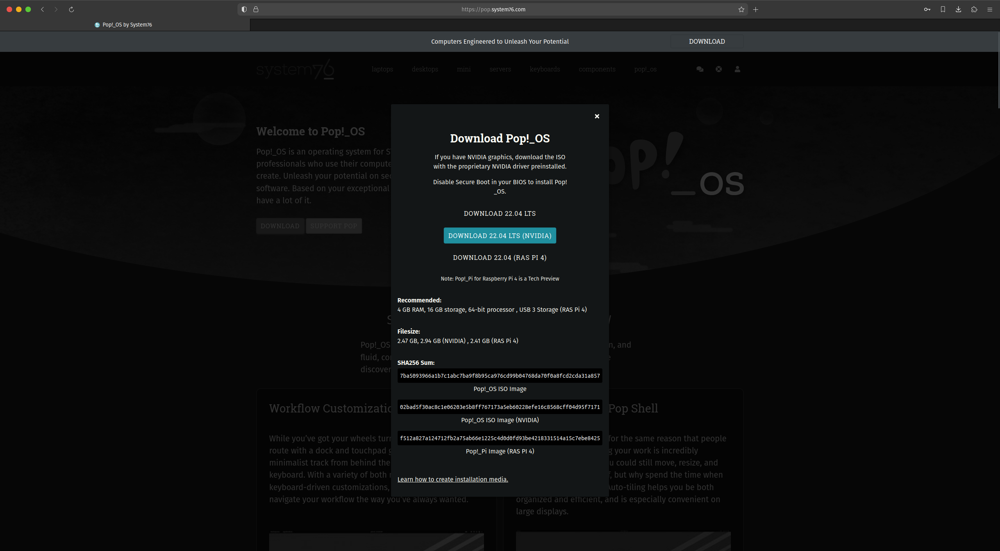2. Creación y configuración en VirtualBox
Después de instalar VirtualBox y realizar su configuración inicial, empezamos con la creación de la máquina virtual. Tras abrir VirtualBox presionamos el botón "New".
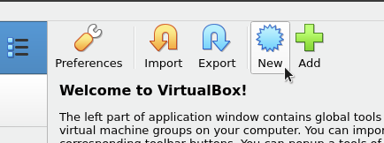Tras presionar el botón "New", se abrirá una ventana para la configuración de esta, presionamos modo experto en la parte inferior. Aquí elegiremos el nombre de la máquina virtual, el archivo .iso, el nombre de usuario, el hardware que queremos que esta tenga y el espacio de disco duro que tendrá la máquina virtual.
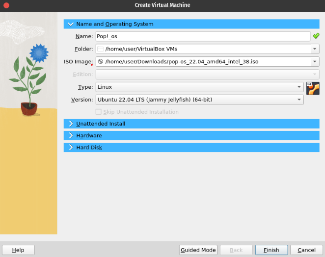Como podemos observar se abre una ventana donde insertamos el nombre de esta, puede ser cualquier nombre que el usuario quiera insertar, y elegimos nuestro archivo .iso que descargamos anteriormente.
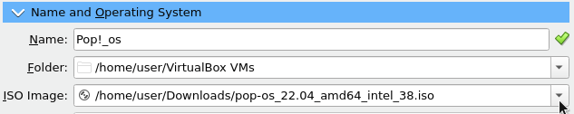En el siguiente paso le asignaremos memoria RAM y una cantidad de CPUs a la máquina virtual. Le asignaremos 4GB de memoria RAM y 4 CPUs ya que estos son los requisitos mínimos recomendables para este sistema.
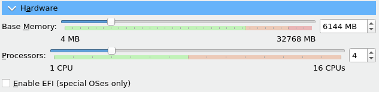Asignamos un espacio para el disco duro virtual de la máquina virtual. El mínimo recomendado es 20GB.
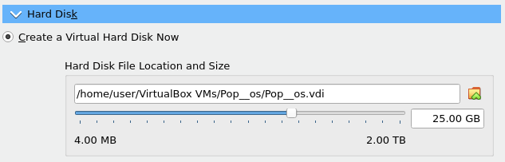Y por último, asignamos al adaptador de red como red NAT, y seleccionamos el que se creó anteriormente.
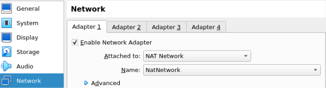3. Pop!_os
Una vez instalada y configurada, realizamos la configuración del sistema por defecto tal y como
se indica en el siguiente enlace.
Al entrar al sistema, abrimos una terminal. Esta se puede abrir presionando en el icono de la terminal,
o presionando la tecla "Windows" y escribiendo "terminal" en el buscador que aparece.
Una vez en la terminal, nos aseguramos de que el sistema operativo esté actualizado con los siguientes comandos:
sudo apt upgrade && sudo apt update
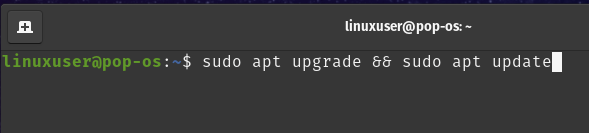
Escribimos "y" cuando se pida confirmación para instalar las actualizaciones.
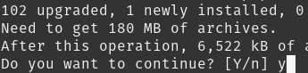4. Samba
Utilizaremos Samba para compartir archivos entre Linux y Windows. Para ello, instalamos Samba con el siguiente comando:
sudo apt install samba

Como todo programa que instalemos en Linux, nos pedirá confirmación para instalarlo. Simplemente escribimos "y" y se continuará la instalación.
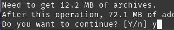5. Creación de su y nuevo usuario
La primera parte de este paso es darle una contraseña a "su" o "superusuario". Esta es la cuenta con permisos de administrador del sistema. Con este crearemos usuarios y podremos cambiar configuraciones del sistema. El comando que vamos a utilizar es el siguiente:
sudo passwd root
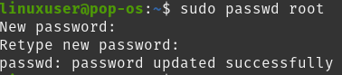
Después de asignarle una contraseña a su, accederemos a este con la contraseña que hemos asignado antes, con el comando:
su
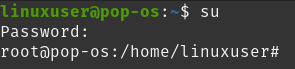
Una vez en este, creamos el nuevo usuario y lo llamaremos "winuser". Le asignaremos una contraseña cuando nos la pida y dejaremos en blanco el resto de información que nos pida, tan solo presionamos la tecla Enter para continuar hasta que el usuario se cree. El comando para crear un usuario es el siguiente:
adduser winuser
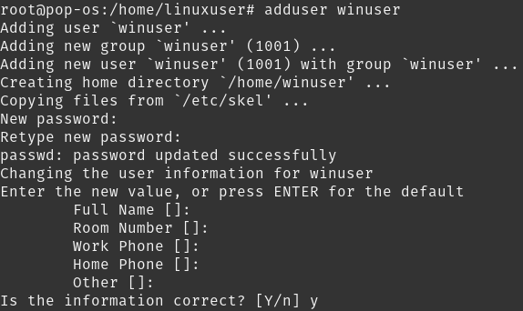
6. Creación de directorio compartido
Después de haber creado el nuevo usuario, cambiaremos a este con el comando:
su winuser
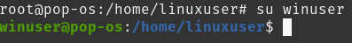
Una vez en este, vamos a crear la carpeta y entramos en esta. Para ello necesitamos salir del directorio actual "/home/linuxuser", y nos dirigiremos a "/home/winuser". El primer comando que utilizaremos es el siguiente y sirve para salir del directorio actual:
cd ..
El siguiente que utilizaremos entrará en el directorio indicado:
cd winuser
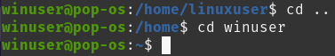
Una vez entremos en el directorio "winuser" crearemos una carpeta llamada "compartida". El comando que vamos a utilizar es el siguiente:
mkdir compartida
Tras crear esta carpeta, necesitamos asignarle permisos para poder acceder a esta carpeta desde Windows. En Linux los permisos se asignan a través de números. En este caso le asignamos todos los permisos a todos los usuarios, el número será 777. Utilizamos el siguiente comando, con una "/" al final de la carpeta, ya que puede haber un archivo llamado "compartida" lo que puede causar problemas, para ello:
chmod 777 compartida/
Ya que estamos en el directorio "winuser", vamos a aprovechar y vamos a crear un archivo dentro de la carpeta "compartida". Lo llamaremos "archivo-linux" y los comandos que utilizaremos son:
cd compartida
touch archivo-linux
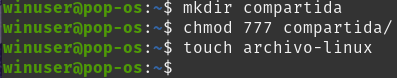
7. Configuración de Samba
Samba es una implementación de Windows SMB, lo utilizaremos para compartir el archivo que hemos creado con Windows. Para poder utilizar este, necesitamos añadir nuestra carpeta creada, junto con unos atributos que veremos siguientemente. Para hacer esto utilizaremos "nano" que es un editor de texto que viene incluido con Pop!_os. Utilizamos el siguiente comando para acceder a la cuenta administradora de Linux con la contraseña que creamos anteriormente:
su
Y una vez dentro de este, utilizamos:
nano /etc/samba/smb.conf
Una vez dentro del archivo, nos dirigimos al final de este con la rueda del ratón o con la tecla de "Page Down". Introducimos lo siguiente:
[compartida]
- path = /home/winuser/compartida
- browseable = yes
- read only = no
- valid users = winuser
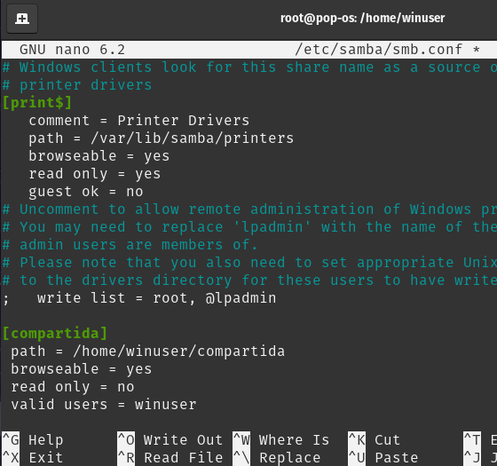
Guardamos este archivo con la combinación de teclas "Ctrl + S" y salimos del archivo después de haber guardado con la combinación
"Ctrl + X".
Una vez guardada esta configuración, tenemos que asignarle a Samba el usuario "winuser" y una contraseña, para ello:
smbpasswd -a winuser

Por último debemos reiniciar el proceso de Samba para que se apliquen todas las configuraciones. Utilizamos el comando:
systemctl restart smbd.service
8. Dirección IP
El último paso de este tutorial en Linux es recoger la dirección IP de esta máquina para, desde Windows, entrar a la carpeta compartida. El siguiente comando nos enseña toda la información de red de esta máquina virtual, la dirección que necesitamos es la subrayada que se puede ver en la siguiente imagen.
ip a